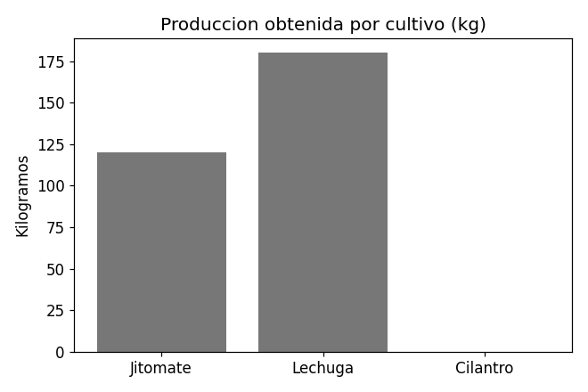

Cosechas registradas
Requisito RF-47: consultar las cosechas registradas.
| ID | Cultivo | Fecha | Cantidad (kg) | Observaciones |
|---|---|---|---|---|
| 1 | Jitomate | 01/05/2026 | 120 | Cosecha completa, buen estado. |
| 2 | Lechuga | 20/04/2026 | 180 | Cosecha parcial por lluvias. |
Registrar cosecha — Requisito RF-46
Actualizar cosecha — Requisito RF-48
Eliminar cosecha — Requisito RF-49
La eliminación es lógica: la cosecha deja de listarse pero no se borra del sistema.
Adjuntar evidencia — Requisito RF-50
Reporte de cosechas en PDF — Requisito RF-51
En este prototipo el documento es un archivo estático de ejemplo: reporte-cosechas.pdf.
Rendimiento total — Requisito RF-52
| Rendimiento total | 300 kg |
|---|
Producción por cultivo — Requisito RF-53

Producción obtenida por cultivo, según los datos de ejemplo de esta página.